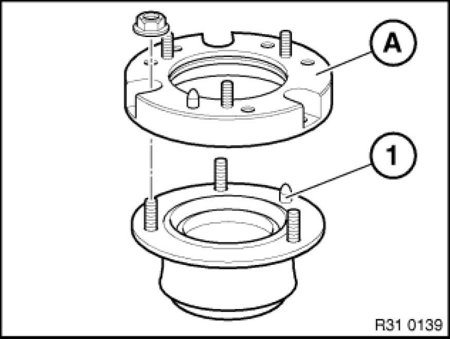
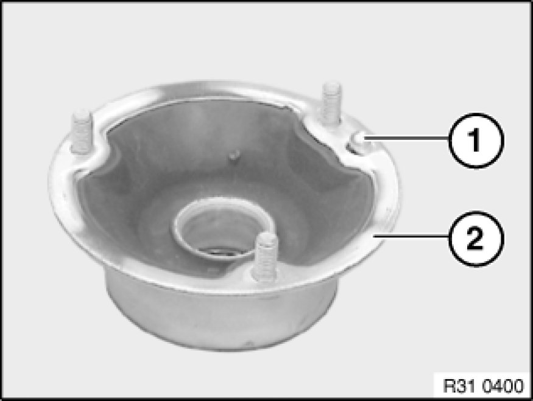

Strut Mount: Service and Repair
31 33 001 - (Removing and installing) replacing front left or right spring strut support bearing

Note:
Procedure is described in the document "Replacing front left or right spring strut Replacing Front Left or Right Spring Strut Shock Absorber".

Replacement:
Vehicle with spacer ring:
Note:
Spacer ring (A) is fitted in vehicles with "rough road package" version.
Unscrew nuts.
Remove spacer ring (A) from support bearing.
Installation:
Align spacer ring (A) using centering pin (1) to support bearing and place in position.
Replace self-locking nuts.
Tightening torque 31 31 1AZ Spring Struts (Front).

If necessary, twist/drive out centering pin (1).
Note:
If a support bearing (2) was fitted without centering pin (1), the centering pin (1) of the new support bearing (2) must be driven or twisted out.